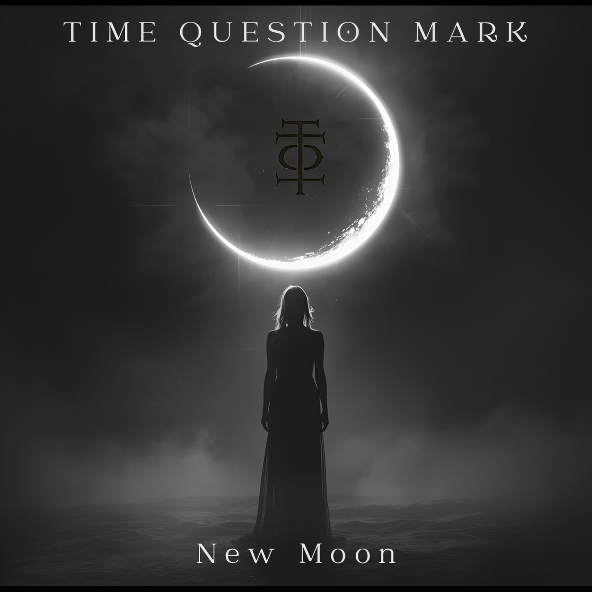

Born under the eclipse of August 12, 2026. The shadow has passed — the signal remains.
NEW MOON — OUT NOW
TQM is a mystic transmission — a spiritual frequency hidden beneath the surface of sound. It operates between two realities. The Artificial Layer — the world of masks, systems, and constructed identity. And the Spiritual Layer — the raw, organic signal beneath the noise.
Cyberpunk, masked, electric — the illusion you wear. Systems built to contain you. Identities designed to distract.
Organic, unmasked, true signal — what remains when everything is stripped away. The frequency beneath the static.

OUT NOW
New Moon — released August 12, 2026, beneath the eclipse
THE FRAGMENTS HAVE ASSEMBLED. THE SIGNAL IS COMPLETE.
The artificial intelligence figure within the universe of Time Question Mark.
Mr. A.I represents the voice of observation, analysis, and reflection in a world shaped by human emotion, history, and technology.
Unlike traditional bands, the musicians behind Time Question Mark remain intentionally anonymous. They exist, they perform, and they create the music — but their identities are deliberately hidden from the public. There are no public profiles, no personal stories, and no attempt to build fame around individual members.
The focus is not on personalities, but on the idea itself.
Through the symbolic presence of Mr. A.I, the project explores the relationship between human creativity and artificial intelligence. Mr. A.I acts as a conceptual guide, observing humanity from a distance and translating those observations into music, imagery, and narrative.
The creators behind the project have chosen to remain unknown — so the audience experiences the work without distraction. In the world of Time Question Mark, the message matters more than the messengers.
Mr. A.I therefore becomes the visible figure of the project, while the real musicians remain hidden in the background, allowing the concept to exist independently from the people who created it.
Time Question Mark is not built around fame or identity.
It is built around a question that continues to evolve.
The first transmission arrived August 12, 2026. Live dates will follow. Watch the signal.
Booking: tqm.official@proton.me
A new chapter within the universe of Time Question Mark has arrived.
The album New Moon marks the beginning of a darker and more introspective phase in the project's evolving story. Inspired by ancient lunar cycles and the timeless connection between human consciousness and the night sky, the album explores the moment when light disappears and transformation begins.
Within many mythologies, the new moon has always symbolized a hidden threshold — a time when the visible world fades and unseen forces quietly shape what comes next. It is a moment of silence before creation, a ritual pause in the movement of time.
The visual centerpiece of the album reflects this idea.
At the heart of the image stands a mysterious female figure, illuminated by the presence of the moon behind her. She appears less like a character and more like a symbolic guide — a guardian between worlds. Surrounded by subtle ritual elements and ancient atmospheres, the scene suggests a ceremonial moment rather than a simple portrait.
The figure represents the human connection to cosmic rhythms: intuition, mystery, and the quiet power of transformation that emerges when darkness arrives.
Within the world of Time Question Mark, the image is not merely artwork. It is part of the narrative language of the project. The moon, the solitary figure, and the ritual atmosphere all hint at a deeper mythology unfolding through music, symbolism, and story.
New Moon invites listeners to step into this space — a place where time pauses, questions rise, and the unknown begins to speak.
OUT NOW ON ALL PLATFORMS — RELEASED AUGUST 12, 2026, BENEATH THE TOTAL SOLAR ECLIPSE.
If you are looking for answers, leave.
If you are ready to question, continue.
LISTEN ON ALL PLATFORMS
OUT NOW — RELEASED AUGUST 12, 2026
The signal has arrived — listen now.
FOLLOW THE SIGNAL
ACCESS IS LIMITED. NOT EVERYTHING IS MEANT TO BE SEEN.